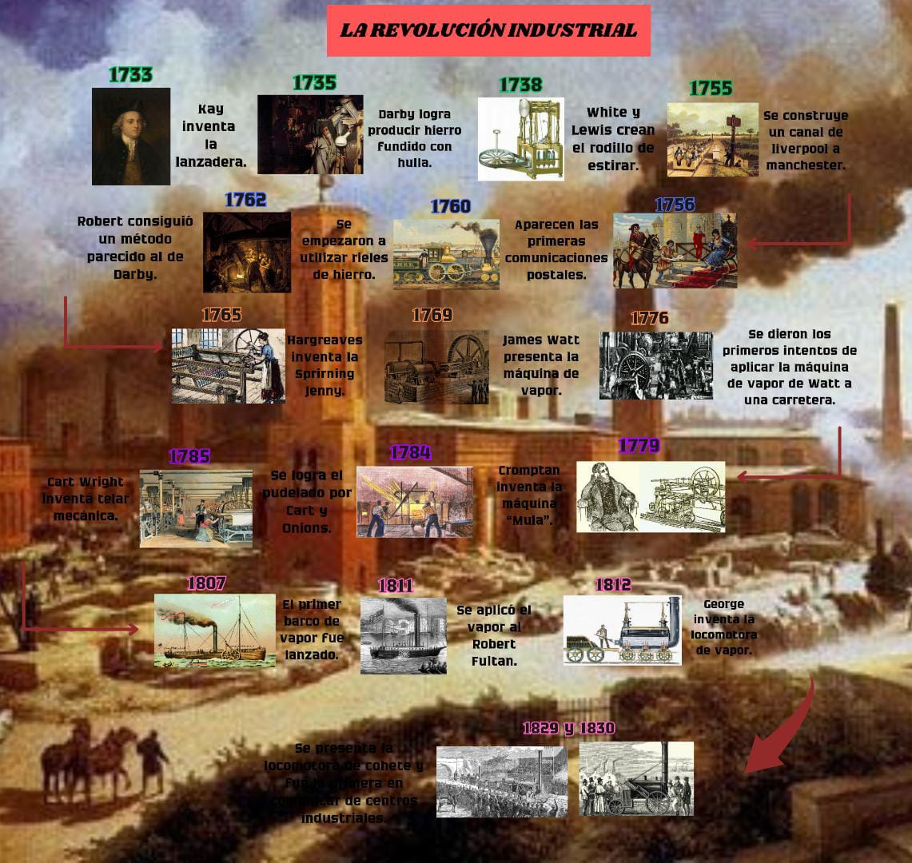

Consecuencias de la revolución industrial:
Económicas: Aumento de la producción, el comercio y la riqueza. Creación de nuevos sectores industriales y mercados. Consolidación del capitalismo y formación de la burguesía y el proletariado.
Sociales: Crecimiento demográfico y migración del campo a la ciudad. Urbanización y deterioro de las condiciones de vida y trabajo de la mayoría de la población. Organización sindical y política de los trabajadores.
Políticas: Surgimiento y consolidación de los estados nacionales modernos. Competencia y conflictos entre las potencias por el control de los recursos, los mercados y las colonias. Desarrollo de nuevas ideologías políticas como el liberalismo, el socialismo, el anarquismo o el nacionalismo.
Culturales: Avance de la ciencia y la tecnología. Aplicación del método científico y difusión del espíritu crítico y racionalista. Cambios en la educación, la religión y el arte.
Ambientales: Impacto negativo sobre el medio ambiente. Agotamiento o deterioro de los recursos naturales. Contaminación atmosférica, hídrica y terrestre. Deforestación y pérdida de biodiversidad.